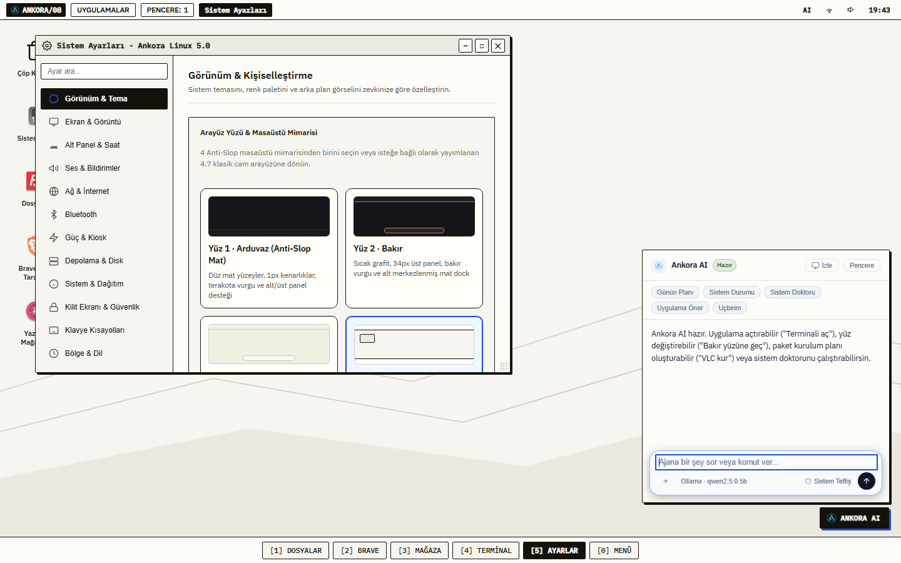

Возможности Ankora Linux 5.0
AyazDE 5.0 объединяет 20 окон, 24 системные темы, четыре облика, Ankora ИИ и 559 пакетов на Devuan 6 Excalibur.
Ключевые особенности выпуска
Стандарт Bostan и 4 облика
Открывается в стиле Bostan с быстрым переходом на Bakır, Cıvata, Arduvaz и классический вид 4.7.
Пузырь Ankora ИИ и 4 режима
Инспекция, Доктор, Разработчик и Агент с памятью 6 последних реплик и Ollama.
Tauri 2.0 и WebKitGTK 4.1
Выгрузка окон за 30 секунд и изоляция веб-оболочки через bwrap.
559 пакетов и школьные доски
Devuan APT, Flathub, официальный репозиторий плюс eta-touchdrv, Fatih Kalem 2 и MEB.
24 темы и Динамический островок
19 обоев и верхняя капсула для медиа, загрузок и телеметрии ОЗУ.
Надёжное обновление с откатом
ayaz-update-helper проверяет SHA-256 и GPG, автоматически откатываясь при сбое.
Четыре режима и провайдера ИИ
Проверьте белый список команд Rust и отфильтруйте ключевые пакеты из каталога 559 приложений.
Четыре режима и провайдера ИИ
Локальная Ollama (127.0.0.1:11434), Gemini 2.5 Flash, OpenAI, Groq или OpenRouter с контекстом 6 ходов.
Читает ОЗУ, ЦП и диск в реальном времени, предлагая безопасную диагностику.
Режим: Инспекция Контекст: 6 ходов + живая телеметрия Действие: df -h / && free -m
Проверка команд в реальном времени
Моделирует is_terminal_command_permitted() и ALLOWED_AGENT_ACTIONS.
Витрина магазина (559 пакетов)
| Приложение | Категория | Источник |
|---|---|---|
Fatih Kalem 2fatihkalem | Eğitim | Resmî Ankora |
ETA Dokunmatiketa-touchdrv | Tahta | Resmî Ankora |
MEB Sertifikasımeb-cert | Okul | Resmî Ankora |
LibreOfficelibreoffice | Ofis | APT |
VS Codecom.visualstudio.code | Geliştirici | Flathub |
VLCvlc | Medya | APT |
Подходящие пакеты не найдены.
Целостная визуальная система
Переключайте облик в шапке или на карточках, чтобы сразу оценить цвета и рамки сайта.


20 встроенных окон из коробки
Базовые инструменты не требуют дополнительной установки.
- Файловый менеджер с установкой .deb/.AppImage
- Магазин программ на 559 пакетов
- Ассистент Ankora ИИ и чат-пузырь
- Запись USB/ISO с защитой системных дисков
- Ankora Report для отчётов на форуме
- Ayaz Updater с автооткатом
- Динамический островок телеметрии и медиа
- Снимки экрана, калькулятор и заметки
- Настройки, Wi-Fi, Bluetooth и звук
